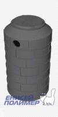
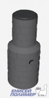
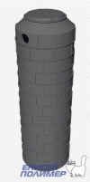
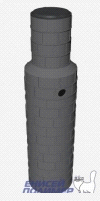
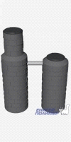
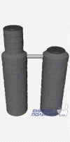
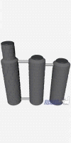

Красноярская производственная компания
полимерпесчаных изделий
+7 (391) 295-82-23
Композитный септик из герметичного и прочного материала с возможностью ручной сборки
Проверенный аналог бетонных колец
Только 2 недели
Скидка 25%
на септик и монтаж
Колодцы из полимер-песчанного композита это современный аналог бетонным
Преимущества полимер-песчанных септиков
За счет сборной конструкции можно создать септик любого размера и объема.
А также возможен монтаж в труднодоступных местах
Посмотрите цену и посчитайте выгоду от покупки по сравнению с другими септиками
Септик дренажный

16 000 р. 12 000 р.
Высота 165 см.
Используется для стока ливневых вод, для дач, бань, гостевых домиков.
Комплект состоит из:
Кольцо колодца (1.0 х 0.2 м) – 6 шт.
Кольцо (1.0 х 0.2) м с отв. – 1шт.
Конусный переходник (100 х 18) - 1 шт.
Люк садовый (нагрузка до 1.5 т.) - 1 шт.
Септик

22 000 р. 16 500 р.
Высота 230 см.
Используется для дач, бань, гостевых домиков, для стока ливневых вод
Комплект состоит из:
Кольцо колодца (1.0 х 0.2 м) – 5 шт.
Кольцо колодца с отв. (1.0 х 0.2) м– 1шт.
Кольцо горловины колодца 0.7х 0.2 м – 4 шт.
Конусный переходник (100 х 18) - 1 шт.
Люк смотровой горловины (3т) -1 шт.
Дно колодца (100х4 ) - 1 шт.
Септик дренажный

26 800 р. 20 100 р.
Объем 2 м3, Высота 300 см.
Используется для стока ливневых вод, для дач, гостевых домиков.
Комплект состоит из:
Кольцо колодца (100х20) - 12 шт.
Кольцо колодца с отв.(1.0 х 0.2) м– 1шт.
Конусный переходник (100х18) - 1 шт.
Люк садовый (нагрузка до 1.5 т.)
Септик

34 800 р. 26 100 р.
Объем 2 м3, Высота 380 см.
Используется для дач, бань, гостевых домиков.
Комплект состоит из:
Кольцо колодца (1.0 х 0.2 м) – 12 шт.
Кольцо колодца с отв. (1.0 х 0.2) м– 1шт.
Кольцо горловины колодца 0.7х 0.2 м – 4 шт.
Конусный переходник (100 х 18) - 1 шт.
Люк смотровой горловины (3т) -1 шт.
Дно колодца (100х4 ) - 1 шт.
Септик

51 000 р. 38 250 р.
Объем 3 м3, Высота 300 см.
Используется для дач, домов, коттеджей в которых проживает 2 человека.
Комплект состоит из:
Кольцо колодца (1.0 х 0.2 м) – 17 шт.
Кольцо колодца с отв. (1.0 х 0.2) м– 3шт.
Кольцо горловины колодца 0.7х 0.2 м– 4 шт.
Конусный переходник (100 х 18) - 2 шт.
Люк садовый (1.5 т.) - 1 шт.
Люк смотровой горловины (3т) -1 шт.
Дно колодца (100х4) - 1 шт.
Септик

61 800 р. 46 250 р.
Объем 4 м3, Высота 380 см.
Используется для дачь, домов, коттеджей в которых проживает 2-3 человека.
Комплект состоит из:
Кольцо колодца (1.0 х 0.2 м) – 23 шт.
Кольцо колодца с отв. (1.0 х 0.2) м– 3шт.
Кольцо горловины колодца 0.7х 0.2 м – 4 шт.
Конусный переходник (100 х 18) - 2 шт.
Люк садовый (1.5 т.) - 1 шт.
Люк смотровой горловины (3т) -1 шт.
Дно колодца (100х4) - 1 шт.
Септик
78 400 р. 58 800
Объем 5 м3, Высота 420 см.
Используется для домов, коттеджей в которых проживает 3-4 человека.
Комплект состоит из:
Кольцо колодца (1.0 х 0.2 м) – 25 шт.
Кольцо колодца с отв. (1.0 х 0.2) м– 7шт.
Кольцо горловины колодца 0.7х 0.2 м – 4 шт.
Конусный переходник (100 х 18) - 3 шт.
Люк садовый (1.5 т.) - 2 шт.
Люк смотровой горловины (3т) -1 шт.
Дно колодца (100х4) - 2 шт.
Септик

100 000 р. 75 000 р.
Объем 7 м3, Высота 400 см.
Используется для домов, коттеджей в которых проживает 5-6 человека.
Комплект состоит из:
Кольцо колодца (1.0 х 0.2 м) – 37 шт.
Кольцо колодца с отв. (1.0 х 0.2) м–7шт.
Кольцо горловины колодца 0.7х 0.2 м – 4 шт.
Конусный переходник (100 х 18) - 3 шт.
Люк садовый (1.5 т.) - 2 шт.
Люк смотровой горловины (3т) -1 шт.
Дно колодца (100х4) - 2 шт.
Свяжитесь с менеджером и оформите заказ со скидкой пока действует акция тел +7 (391) 295-82-23 или оставьте заявку
Мы доставим колодец уже на следующий день после обращения и никакой головной боли!
Обращение в компанию
Расчет стоимости и формирование заказа
Доставка и монтаж своими специалистами, по ценам ниже рыночных (принеобходимости)
Хранение до монтажа при необходимости
Погрузка бесплатно
Герметичный септик на вашем участке, с долговечным сроком службы без запаха и деформации
В подарок бактерии биологиской очистки септика
производственная компания енисей полимер - это лидер российского рынка по производству полимер-песчанных колодцев
Наша компания Енисей - полимер, является лидером Красноярского рынка. Наша продукция востребованна по всей России. особенно от центральной до восточной части страны.
Мы занимаемся производством полимер - композитных материалов уже более 13 лет и гарантируем низкую цену без посредников и высокое качество продукции напрямую от производителя.
Все необходимые специалисты для монтожа погрузки, разгрузки и доставки в одной компании, без участия третьих лиц.
Также мы бесплатно оказываем услуги хранения купленной продукции до монтожа, можете купить сейчас, а забрать церез год.
с нами работают такие компании как:
Запишитесь на монтаж по телефону +7 (391) 295-82-23 или оставьте заявку
Как нас найти
г. Красноярск, пр. Газеты Красноярский Рабочий проспект, 199 оф 21
+7 (391) 295-82-23
Главный офис
Производство
Остались вопросы?
СПАСИБО!
Ваша заявка принята